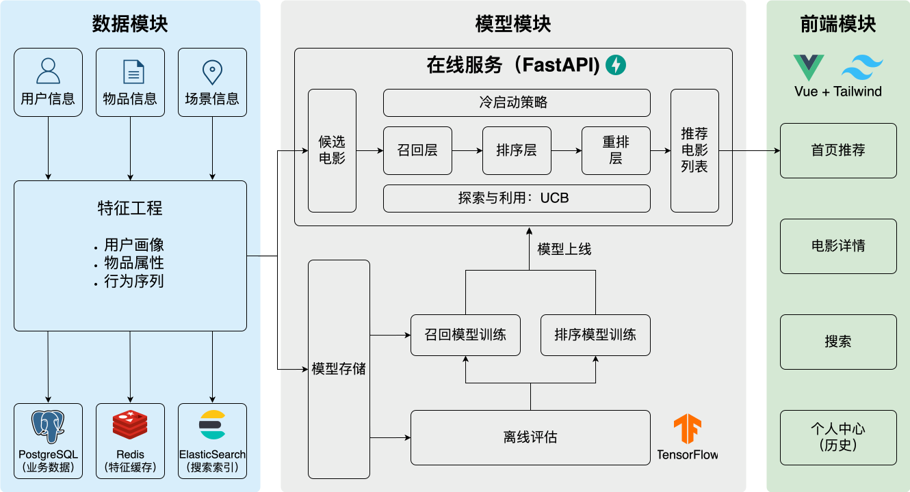
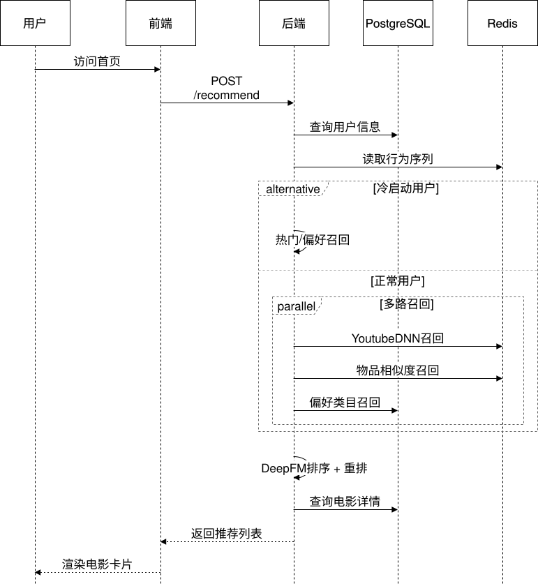

10.2. 系统架构设计¶
生产级推荐系统由多个子系统协同工作。本节介绍整体设计、核心组件以及数据流转方式。
10.2.1. 离线与在线系统¶
工业级推荐系统的架构可划分为两个部分：离线系统和在线系统。
离线系统负责”生产”：处理全量历史数据，训练机器学习模型，计算物品向量和相似度矩阵。计算时间充裕（小时级甚至天级），追求模型质量而非响应速度，产出模型文件、向量索引、特征字典等。
在线系统负责”服务”：接收用户的实时请求，调用模型，组装推荐结果并返回。响应时间有限（百毫秒级），需要在质量和延迟之间取得平衡，依赖离线系统产出的模型和特征。
离线系统定期运行（每天或每周），将产出物写入共享存储；在线系统从共享存储加载这些产出物。两者通过存储层解耦：离线系统可以使用更复杂的算法、更大的数据量；在线系统专注于低延迟服务。
10.2.2. 整体架构图¶
下图展示了我们将要构建的电影推荐系统的完整架构：
{kind=link}

图10.2.1 电影推荐系统整体架构¶
系统由以下核心组件构成：
10.2.2.1. 数据存储层¶
PostgreSQL（业务数据库） 存储核心业务数据：用户表（users）记录用户ID、性别、年龄、职业等；电影表（movies）记录电影ID、标题、类型、年份、海报URL等；评分表（ratings）记录用户对电影的评分及时间戳。
Redis（特征缓存）
存储在线推理所需的实时特征：用户画像（user:{id}:profile）包含性别、年龄、偏好类目等静态特征；用户行为序列（user:{id}:history）记录最近交互的电影ID列表；物品向量索引用于快速相似度检索。
共享文件目录 存储机器学习相关的文件：训练好的模型文件（user_model、ranking_model）、物品向量矩阵（item_embeddings.npy）、特征编码字典（vocab_dict.pkl）。离线流程将产出物写入共享目录，在线服务从该目录加载。
Elasticsearch（搜索引擎） 支撑电影搜索功能，对电影标题、类型、演员等字段建立倒排索引。
10.2.2.2. 离线流水线¶
离线流水线按顺序执行以下步骤。
特征工程（Feature Engineering）：从原始评分数据中提取训练所需的特征，包括用户特征（ID、人口统计）、物品特征（ID、类型）、行为序列特征（历史观影列表）。
召回模型训练（Retrieval Training）：训练YoutubeDNN双塔模型，学习用户向量和物品向量的映射函数。
排序模型训练（Ranking Training）：训练DeepFM模型，学习用户-物品对的点击概率预测函数。
模型部署（Model Deployment）：将训练好的模型文件部署到共享目录，供在线系统加载。
特征上线（Feature Ingestion）：将用户画像、行为序列、物品信息写入Redis，供在线推理使用。
图10.2.2 展示了数据从原始CSV经过处理，最终写入共享目录和Redis的完整流转过程。
{kind=link}
图10.2.2 离线数据流¶
10.2.2.3. 在线流水线¶
在线流水线处理每一个用户请求，按顺序经过以下阶段。
冷启动检测（Cold Start Detection）：判断用户是否为新用户（历史行为少于阈值）。如果是新用户，走冷启动流程；否则走正常推荐流程。
多路召回（Multi-Channel Recall）：并行执行多种召回策略——YoutubeDNN召回基于用户向量检索相似电影；物品相似度召回基于用户最近观看的电影召回相似电影；偏好类目召回基于用户的类型偏好召回对应类型的热门电影。
精准排序（Ranking）：使用DeepFM模型对召回的候选电影进行CTR预估，按预测分数排序。
多样性重排（Reranking）：使用打散策略，避免连续推荐相同类型或相同年代的电影，提升推荐列表的多样性。
结果组装（Assembly）：从数据库查询电影的完整信息（标题、海报、演员等），组装成前端所需的响应格式。
图10.2.3 以用户打开首页为例，展示了一次推荐请求的完整数据流转。整个流程的目标延迟控制在200毫秒以内。
{kind=link}

图10.2.3 在线数据流¶
10.2.2.4. 前端应用¶
前端基于Vue.js构建，包含四个核心页面：首页展示个性化推荐的电影列表；电影详情页展示单部电影的详细信息及相似电影推荐；搜索页支持关键词搜索；个人中心展示用户的观影历史和偏好设置。
10.2.3. 关键设计决策¶
10.2.3.1. 召回与排序分离¶
理论上可以训练一个模型对所有电影直接打分，但这面临性能问题：假设电影库有10万部电影，每次请求都需要对10万个候选进行排序模型推理，即使每次推理只需1毫秒，总耗时也会达到100秒。
因此采用漏斗式架构：召回阶段用轻量级模型快速筛选数百个候选，排序阶段用复杂模型对这数百个候选精确打分。
10.2.3.2. 多路召回与融合¶
单一召回策略有其局限性：向量召回依赖模型学到的表征，可能遗漏模型未能捕捉的相关性；协同过滤依赖历史共现，对新电影或小众电影覆盖不足；热门推荐则缺乏个性化。融合多种策略可以取长补短。本项目采用Snake Merge（蛇形合并）策略：从各路召回中轮流取出候选，确保每路都有代表性的候选进入排序阶段。
10.2.3.3. 冷启动处理¶
新用户缺乏行为数据，传统的协同过滤和向量召回都无法有效工作。本项目设计了独立的冷启动流程：
通过交互次数阈值检测新用户
如果用户设置了偏好类型（preferred_genres），优先推荐这些类型的优质电影
如果没有偏好设置，使用热门推荐或探索策略（UCB）
随着用户积累行为数据，逐渐过渡到正常推荐流程
10.2.3.4. 特征存储与计算分离¶
在线推理对延迟敏感。如果每次请求都从PostgreSQL查询用户的历史行为，数据库会成为性能瓶颈。因此将高频访问的特征预先计算并写入Redis：用户画像在注册或更新时写入，用户行为序列在每次评分后更新，物品向量在离线训练后批量写入。从Redis读取特征的延迟通常在1毫秒以内，比数据库查询快1-2个数量级。
下一节将从离线流水线开始，逐一深入每个组件的实现。